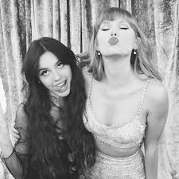
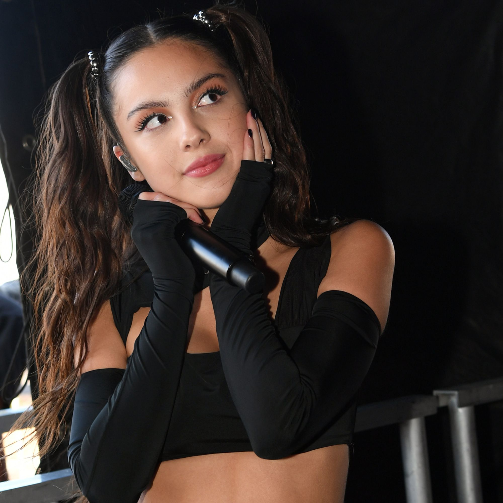
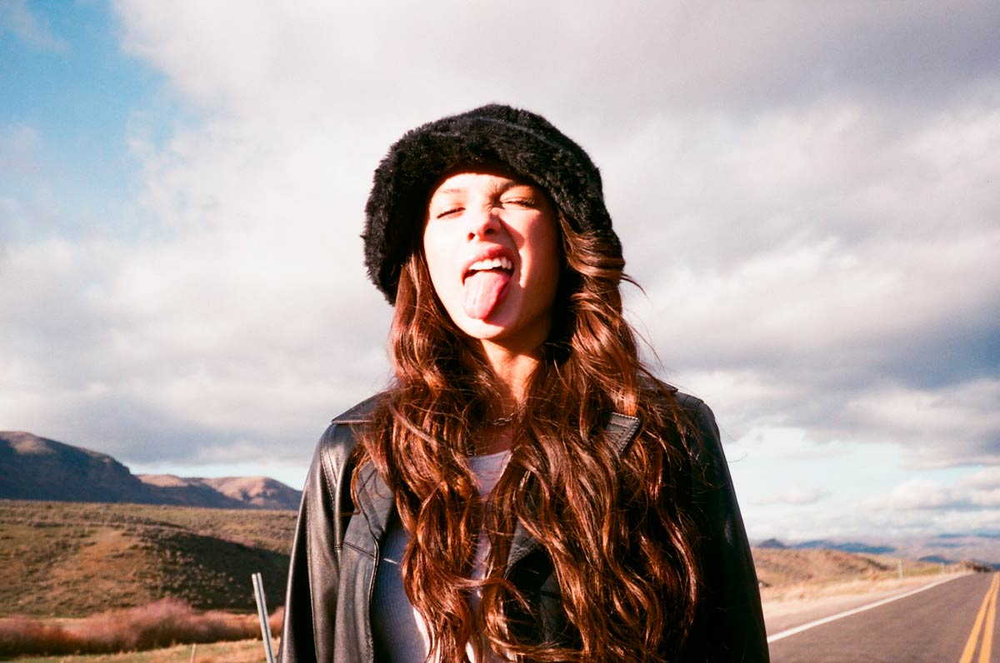
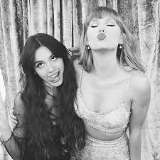
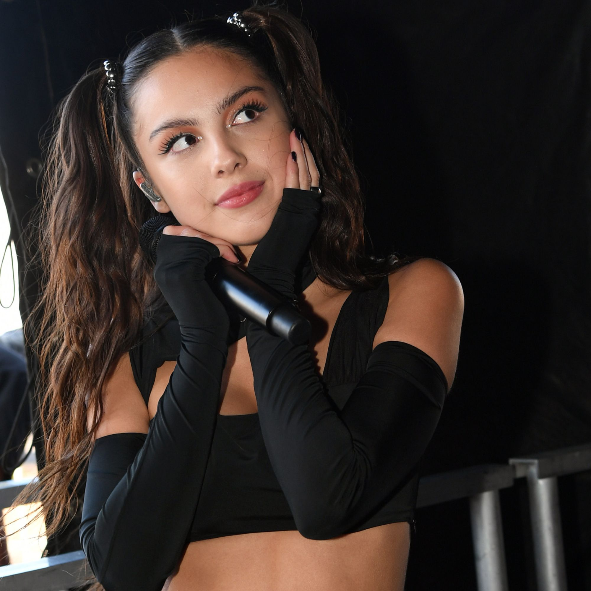
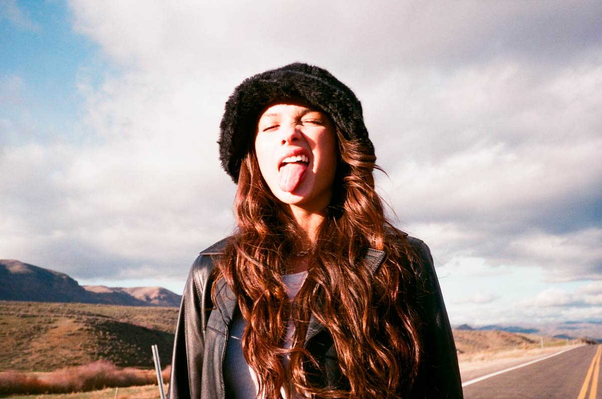

Bibliografia
Olivia Rodrigo es una cantante, compositora y actriz estadounidense que ha emergido como una de las artistas más destacadas de la música pop actual. Nacida el 20 de febrero de 2003 en Temecula, California, Rodrigo comenzó su carrera en la actuación, obteniendo reconocimiento por su papel en la serie de Disney Channel, "High School Musical: The Musical: The Series".
Sin embargo, fue su sencillo debut "drivers license", lanzado en enero de 2021, el que la catapultó a la fama mundial. La canción se convirtió en un éxito instantáneo, alcanzando la cima de las listas de éxitos en todo el mundo y estableciendo a Rodrigo como una de las artistas más emocionantes y prometedoras de la música pop.
En marzo de 2021, Olivia Rodrigo lanzó su álbum debut, "SOUR", que recibió elogios de la crítica y generó varios éxitos adicionales, incluidos "good 4 u" y "deja vu". Este álbum le valió numerosos premios, incluido el premio MTV Video Music Award al Mejor Nuevo Artista y el premio American Music Award al Álbum Favorito de Pop/Rock.
En la actualidad se encuentra en medio de su gira mundial de su segundo album GUTS, ademas fue nominada nuevamente a album del año en los grammys y ha colaborado para los juegos del hambre con una cancion.
 




